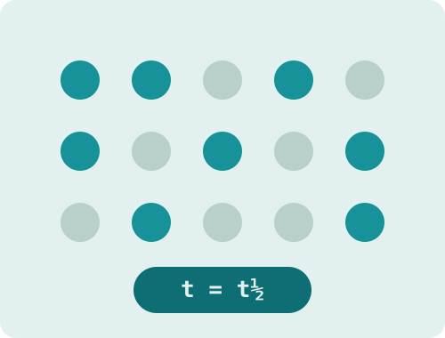

Nuclide Decay
Radioactive decay is random per atom, predictable in bulk. Pick any of 30 nuclides off the chart, press play, and watch 400 atoms fall apart on a scaled clock.

Chart of nuclides — 30 selectable
Pick a nuclide
400 atoms — every one walks the chain
How this works: every atom rolls its own dice each tick against the real half-life of whatever nuclide it currently is. When one decays it becomes the next link in the chain and keeps rolling, so the daughters decay too and the grid colors match the chain list beside it. The clock is scaled to the parent, which means a daughter thousands of times faster than its parent would finish inside a single frame. Those steps are slowed to stay visible, and that floor is the one deliberate distortion here. Chains are shortened to their named major steps. On the chart, the faint grey band is a schematic of the valley of stability rather than every measured nuclide, but the 30 colored circles are real: each sits at its true neutron and proton count and is colored by how it decays. The dashed box marks roughly where theory places the island of stability.
What a half-life actually means
A half-life is not a countdown. No atom in the grid knows how old it is, and none of them is waiting for a timer to run out. Each unstable nucleus simply has a fixed probability of falling apart in the next moment, and that probability never changes as it ages. The half-life is the span over which that probability adds up to fifty percent. Run it on one atom and you learn nothing useful. Run it on four hundred and the curve comes out smooth every time.
The chart of nuclides shows why some nuclei are unstable at all. Protons repel each other, and the strong force that holds a nucleus together only reaches across a short distance, so a nucleus needs a workable ratio of neutrons to protons. Plot every known nuclide with neutrons across and protons up, and the stable ones form a narrow diagonal band called the valley of stability. Nuclides above the valley have too many protons and tend to decay by positron emission or electron capture. Below it, too many neutrons, and beta decay converts one into a proton. Heavy nuclides past bismuth shed alpha particles and march down the chart in steps until they land somewhere stable, usually an isotope of lead.
The upper right of the chart is annotated but empty. Nuclear shell models predict that around 114 protons and 184 neutrons, filled shells should push half-lives back up from microseconds to something far longer, forming an island of stability in a sea of nuclides that barely exist. Elements in that neighborhood have been made a few atoms at a time, and the predicted sweet spot has not been reached. It remains a hypothesis with real evidence behind it and no confirmation yet.
Why the daughters matter
A decay chain is rarely one step. Uranium-238 has to pass through thorium, more uranium, radium, and radon before it finally settles as lead, and every one of those is radioactive in its own right. That is why the daughters are often the real hazard. Radon in a basement is not mined or manufactured, it seeps up from radium sitting in ordinary rock, and it arrives because uranium that formed before the Earth did is still working its way down the chain underneath the house.
Watch the counts beside the grid and you can see two different behaviours. A daughter with a much shorter half-life than its parent never accumulates: it decays about as fast as it is produced, so its count stays low and steady while atoms stream through it. A daughter with a longer half-life does the opposite and piles up, because the chain delivers atoms faster than it can clear them. Pick technetium-99m and almost everything jams at technetium-99, which takes 211 thousand years to move on and will not shift on a six-hour clock.